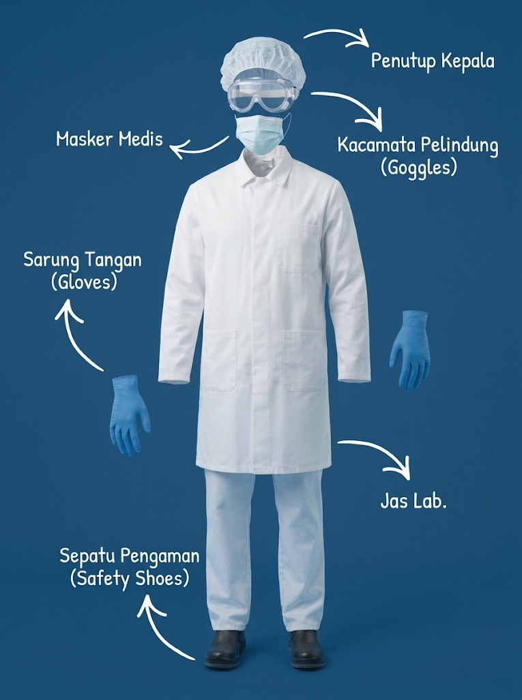
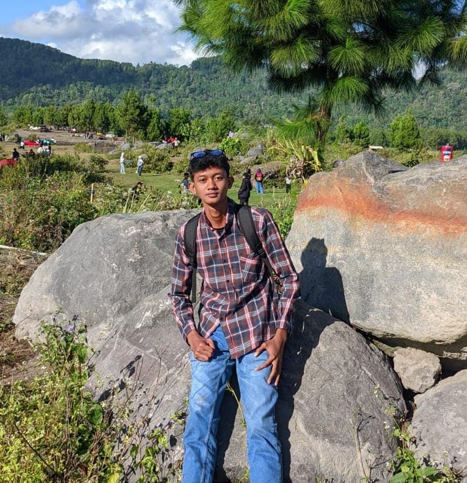

Cegah Sebelum Terjadi
Kenali sifat bahan kimia dan potensi risiko sebelum mulai beraktivitas (Rahman, 2020).
K3L (Keselamatan, Kesehatan Kerja, dan Lingkungan) adalah pilar esensial dalam setiap aktivitas kerja dan praktikum laboratorium untuk mengeliminasi kecelakaan kerja, menangkal penyakit akibat kerja, serta melindungi kelestarian lingkungan hidup.
K3L mencakup tiga pilar tak terpisahkan: keselamatan kerja, kesehatan pekerja, dan proteksi lingkungan hidup. Penelitian membuktikan bahwa kepatuhan terhadap SOP secara signifikan menurunkan risiko cedera mekanik, paparan uap karsinogenik, keracunan, hingga kebakaran dan ledakan.
*Data empiris bersumber dari analisis uji statistik SPSS 26 nilai signifikansi p=0,000 (Maryanti et al., 2025) dan kajian editorial K3L (Rahman, 2020).
Kenali sifat bahan kimia dan potensi risiko sebelum mulai beraktivitas (Rahman, 2020).
Gunakan APD lengkap dan patuhi tata tertib laboratorium secara konsisten (Rahmadani et al., 2025).
Kelola limbah B3 dengan benar agar tidak mencemari ekosistem dan warga (Maryanti et al., 2025).
K3L (HSE) secara spesifik mengkaji tiga aspek yang tidak dapat dipisahkan: keselamatan kerja, kesehatan kerja, dan kesehatan lingkungan hidup (Rahman, 2020).
Mencegah terjadinya kecelakaan fisik kerja. Tanpa kepatuhan K3, pekerja berisiko mengalami kecelakaan mulai dari luka gores ringan, fraktur (patah tulang), hingga kecelakaan fatal (kematian).
Fokus: Pengendalian sumber bahaya fisik, tata letak aman, dan prosedur operasional standar (SOP).
Mencegah Penyakit Akibat Kerja (PAK). Paparan bahaya tanpa proteksi memicu gejala akut seperti pusing, mual, hingga penyakit berat seperti penurunan pendengaran (tuli), kerusakan paru, dan serangan jantung.
Fokus: Pengawasan higienitas, ventilasi udara, ergonomi posisi kerja, serta pemeriksaan kesehatan berkala.
Aktivitas kerja yang mengabaikan daya dukung lingkungan dapat merusak ekosistem dan membahayakan masyarakat sekitar melalui pencemaran air, tanah, dan emisi udara berbahaya.
Fokus: Pemilahan dan penetralan limbah cair/padat sebelum dibuang ke saluran umum.
Pemerintah RI telah menetapkan UU No. 1 Tahun 1970 tentang Keselamatan Kerja, PP No. 50 Tahun 2012 (SMK3), serta regulasi Kemenaker & Kemenkes sebagai acuan hukum yang mengikat.
Tantangan: Seringkali diabaikan karena minimnya edukasi dan pengawasan, memicu insiden berulang.
Tidak ada kawasan kerja atau laboratorium yang bebas risiko. Menurut pakar K3 Suma'mur, potensi bahaya diklasifikasikan ke dalam 5 faktor utama yang wajib diidentifikasi sedini mungkin.
Bahan kimia reaktif, zat karsinogenik (pemicu kanker), uap beracun, zat korosif asam/basa kuat, serta pelarut mudah menyala dan meledak.
Pencegahan: Baca label botol dan MSDS, gunakan lemari asam (fume hood), dan pakai respirator pelindung kimia.
Pecahan alat kaca lab, radiasi ionik dan non-ionik, suhu panas api bunsen, kebisingan alat, getaran mekanis, serta sengatan arus listrik.
Pencegahan: Pengecekan insulasi kabel listrik, pelindung tangan tahan panas, kacamata goggle, dan pengaman alat.
Paparan mikroorganisme patogen, bakteri, jamur, virus, cairan tubuh, serta kontaminasi spesimen biologis saat praktikum mikrobiologi.
Pencegahan: Gunakan biosafety cabinet, dekontaminasi alkohol 70%, sterilisasi autoklaf, dan sarung tangan nitril medis.
Postur kerja janggal (membungkuk lama saat mengamati mikroskop), gerakan tangan berulang saat memipet, stres kerja, dan kelelahan (fatigue).
Pencegahan: Penataan kursi ergonomis, istirahat peregangan berkala tiap 45 menit, dan pembagian tugas praktikum yang seimbang.
Hasil evaluasi penerapan K3 pada 100 responden mahasiswa Program Studi Farmasi di laboratorium kimia (Maryanti et al., 2025) menunjukkan 7 indikator penting dengan capaian kepatuhan yang tinggi.
Desain tata ruang memadai, jalur akses evakuasi tidak terhalang, ventilasi udara lancar, pencahayaan merata, dan pintu darurat berfungsi optimal.
Pedoman: Lorong bebas hambatan dan denah evakuasi terpasang jelas di dinding ruangan.
Penyimpanan terpisah sesuai sifat reaktivitas (asam kuat vs basa, pelarut organik), wadah berlabel jelas dengan tanggal penerimaan, serta tersedianya berkas MSDS.
Pedoman: Selalu cek simbol bahaya piktogram GHS sebelum menuangkan bahan kimia reaktif.
Pengelolaan kultur mikroba dan spesimen biologis secara terisolasi, pemakaian laminar air flow / biosafety, serta disinfeksi sebelum dan sesudah kegiatan.
Pedoman: Dekontaminasi spesimen dengan autoklaf sebelum dibuang untuk mencegah infeksi patogen.
Penerapan prinsip *good housekeeping*, meja praktikum dibersihkan dari reagen tumpah, bak cuci instrumen bersih, dan lantai bebas genangan licin.
Pedoman: Jangan tinggalkan alat gelas kotor di meja; bilas segera dengan akuades.
Ketersediaan sarana tanggap darurat berupa kotak P3K lengkap, eyewash station untuk bilas mata, shower darurat, dan APAR terawat siap pakai.
Pedoman: Hafalkan posisi APAR dan pastikan jarum tekanan selalu pada zona hijau.
Kewajiban mengenakan jas lab berkancing lengkap, sarung tangan pelindung kimia, kacamata goggle rapat, masker filtrasi, dan sepatu tertutup.
Pedoman: Dilarang memasuki area laboratorium kimia tanpa mengenakan APD standar.
Pemisahan limbah cair organik (berhalogen dan non-halogen), limbah anorganik asam/basa, serta limbah padat (pecahan kaca, jarum, sarung tangan). Limbah ditampung dalam jerigen khusus berlabel dan dimusnahkan secara legal tanpa mencemari saluran umum.
Pedoman: Jangan pernah membuang pelarut organik atau logam berat langsung ke wastafel laboratorium!

Alat Pelindung Diri (APD) merupakan baris pertahanan kritis bagi praktikan dan pekerja. Berdasarkan modul PKM K3 SMAN 3 Bone dan riset farmasi Palembang, sarana APD berikut mutlak dipenuhi:
Pastikan APD dalam kondisi utuh sebelum dipakai. Jangan menggunakan sarung tangan berlubang atau kacamata pelindung yang buram/retak.
Periksa kelengkapan APD hari iniKedisiplinan dan kemampuan mengontrol diri selama berada di ruang laboratorium adalah kunci utama keberhasilan dan keselamatan kerja (Fathonah et al., 2023).
Pahami tujuan eksperimen, kenali sifat fisiko-kimia bahan reagen, reaksi eksotermik, dan pastikan izin kerja praktikum telah disetujui dosen/laboran.
Periksa keutuhan labu dan buret kaca dari retakan mikro, cek fungsi lemari asam (fume hood), serta pastikan APAR dan eyewash siap dipergunakan.
Jika tercium bau uap menyengat, percikan api, atau tumpahan reagen pekat, segera hentikan pekerjaan, evakuasi rekan, dan beri tahu penanggung jawab.
Luangkan satu menit sebelum melangkah ke area kerja atau meja praktikum. Checklist ini diadaptasi dari instrumen kuesioner 43 item evaluasi K3 laboratorium kimia (Maryanti et al., 2025).
Bila terkena cairan kimia korosif, basuh segera pada eyewash / air mengalir minimal 15 menit. Untuk api awal, gunakan APAR dengan teknik PASS (Tarik pin, Arahkan nozzle, Tekan tuas, Sapukan).
Seluruh materi edukasi, statistik persentase kepatuhan, serta pedoman keselamatan pada website ini dirangkum langsung dari publikasi jurnal ilmiah terakreditasi.
Mengkaji integrasi konsep HSE, dampak pengabaian keselamatan dan kesehatan kerja terhadap fatalitas, timbulnya penyakit akibat kerja (PAK), pencemaran lingkungan, serta kepatuhan pada regulasi UU No. 1/1970.
Penelitian survei kuantitatif (n=100 responden) dengan uji statistik SPSS versi 26 (p=0,000, rata-rata mean 96,74%) mengevaluasi 7 indikator keselamatan laboratorium kimia dan tinjauan kasus ledakan lab.
Kajian pengabdian masyarakat di SMAN 3 Bone tentang pengenalan budaya K3, klasifikasi potensi bahaya kerja menurut Suma'mur (fisik, kimia, biologi, ergonomi, psikososial), sarana APD, dan rambu peringatan.

